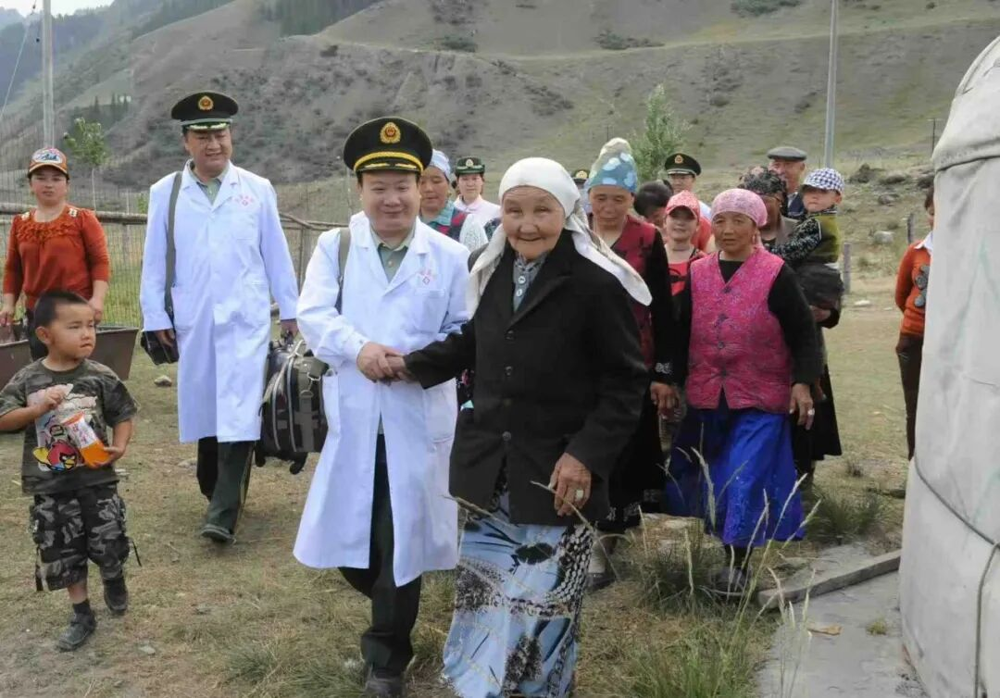
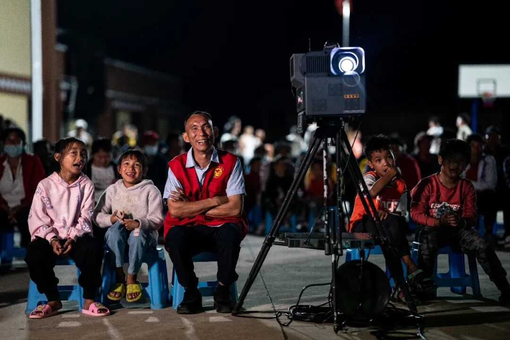

School-specific media
图 2 · 校级场景动画
切换到不同学校时，画面与一句“旧物如何继续被使用”同步变化。校徽只有 25 px，外圈控件 44×44 px。
SICHUAN UNIVERSITY
让旧书，
让旧书，
在校园里继续被翻开
四川大学 · 校园实景素材 / 校官网
Qinghe circle / visual revision
图 2 改为随学校切换的校园实景微动画，校徽作为紧凑的播放/暂停控件；公益影像改为中国公益网站公开宣传素材。 下面只是可审阅样片，尚未写回 Word 或正式截图。
School-specific media
切换到不同学校时，画面与一句“旧物如何继续被使用”同步变化。校徽只有 25 px，外圈控件 44×44 px。
四川大学 · 校园实景素材 / 校官网
Chinese public-good media
主视觉换为亲青公益宣传视频，图集换为中国志愿服务联合会公开现场图；不再使用国外图库里的公益场景。
Public good / 让去向被看见
物资、服务对象与回执都以公开信息为准；宣传片只解释公益议题，不代表青禾流转已开展片中的活动。

医疗志愿服务 · 中国志愿服务联合会
村寨公益放映 · 中国志愿服务联合会 公共引导服务 · 中国志愿服务联合会
公共引导服务 · 中国志愿服务联合会